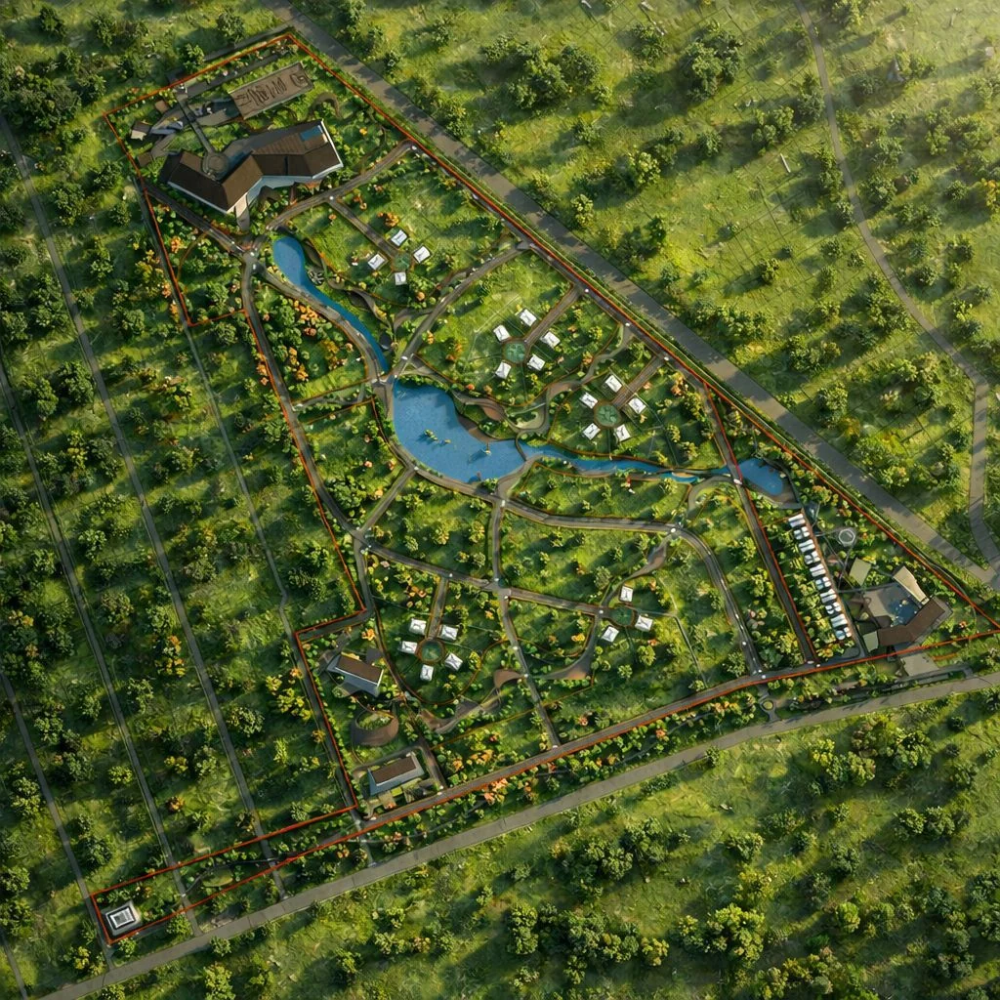
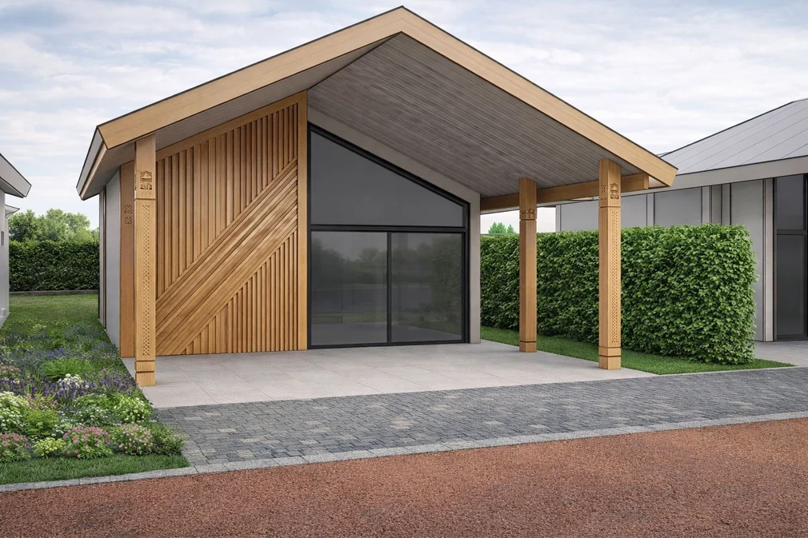

Живые улицы
«Мироселье» предлагает создать в Кушнаренковском районе Башкортостана ремесленный посёлок. В предварительном мастер-плане 2026 года дома соседствуют с мастерскими, а площадь и общественный амбар образуют центр посёлка.
Старокамышлинский сельсовет · Предварительная концепция
Место для своего дела
Посёлок задуман вокруг ремесленной улицы. Здесь мастер может работать рядом с домом, показать, как сделана вещь, и продать её гостям.
Для посёлка предложены жилая слобода, ремесленные и гостевые ряды. Их связывают пешеходные маршруты между сквером, площадью и амбаром. По выходным часть территории может стать местом для рынка, где жители представят свою продукцию.
Как устроен посёлок
На плане между Ильмурзино и Старыми Камышлами предусмотрены жилые улицы, общественный сад и прогулочные дорожки у воды. Среди вариантов застройки есть небольшие дома с отдельным входом со стороны ремесленной улицы.


Общий амбар
Главным местом встречи авторы предлагают сделать амбар. В центре ремесленного посёлка это общественное здание с площадью перед входом.
В тёплое время события смогут выходить из здания на площадь. Поблизости предусмотрены мини-рынок, амфитеатр и места отдыха. Вместе они дают посёлку возможность принимать гостей и оставляют жителям пространство для повседневной жизни.
Иллюстрации из предварительной концепции мастер-плана ООО «Мироселье», 2026 год.
Открыть мастер-план в PDF